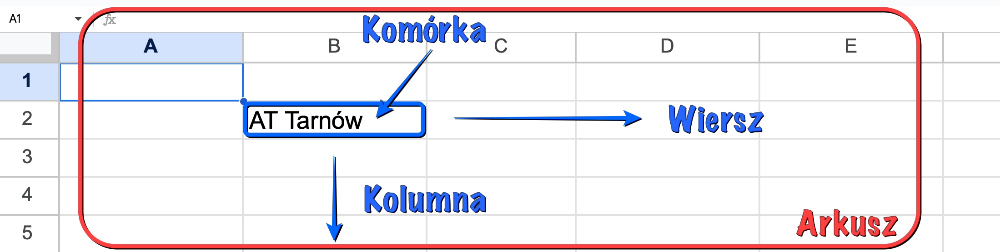
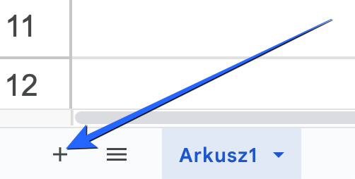

Laboratorium 3: Wprowadzenie do Google Sheets.
Google Sheets to internetowy arkusz kalkulacyjny, umożliwiający tworzenie i analizę danych w tabelach. Działa w chmurze, umożliwiając współpracę wielu użytkowników w czasie rzeczywistym. Jest częścią pakietu Google Workspace, integrując się z innymi narzędziami Google.
Arkusz: Pojedyncza strona w pliku Google Sheets, składająca się z siatki wierszy i kolumn.
Wiersz: Poziomy układ komórek, oznaczony liczbami (1, 2, 3...).
Kolumna: Pionowy układ komórek, oznaczony literami (A, B, C...).
Komórka: Pojedynczy prostokąt, oznaczony adresem (np. A1, B2).

W lewym dolnym rogu ekranu znajduje się przycisk "+" (dodaj arkusz).

To narzędzie, które pozwala automatycznie formatować komórki na podstawie określonych warunków (np. kolorowanie komórek z wynikami powyżej 2.0 na zielono).
Format danych pozwala określić, jak dane są wyświetlane w komórkach (np. liczby z dwoma miejscami po przecinku, daty w odpowiednim formacie).
Formuły to wyrażenia, które wykonują obliczenia na danych w arkuszu. Formuła zawsze zaczyna się od znaku "=". Można używać funkcji (np. SUM()) i operatorów matematycznych (np. "+"", "-", "*"", "/"). Przykład: =SUM(A1:A10) (sumuje wartości w komórkach od A1 do A10).
Funkcja COUNTIF() zlicza komórki w danym zakresie, które spełniają określone kryteria. Składnia: COUNTIF(zakres; kryteria). Przykład: COUNTIF(C2:C5; ">2") (zlicza, ile razy w zakresie C2:C5 ocena jest większa od "2").
Zaznacz dane, które chcesz przedstawić na wykresie. Kliknij Wstaw w górnym menu. Wybierz Wykres. W Edytorze wykresów po prawej stronie wybierz typ wykresu i dostosuj jego wygląd.
Funkcja IF() zwraca jedną wartość, jeśli dany warunek logiczny jest spełniony, i inną wartość, jeśli nie jest spełniony. Składnia: IF(warunek; wartość_jeśli_prawda; wartość_jeśli_fałsz). Przykład: =IF(C3>2; "Zal"; "Brak zal") (jeśli wartość w C3 jest większe niż 2, zwraca "Zal", w przeciwnym razie "Brak zal").
Rekordy biegowe (wprowadzanie i edycja danych):
Analiza wyników skoku w dal (formatowanie danych):
Obliczanie BMI (podstawowe funkcje):
Wizualizacja postępów (tworzenie wykresów):
Porównanie wyników drużynowych (wykresy porównawcze):
Analiza frekwencji na zajęciach Anatomii (funkcje logiczne):
Wiem, że nic nie wiem
~Sokrates